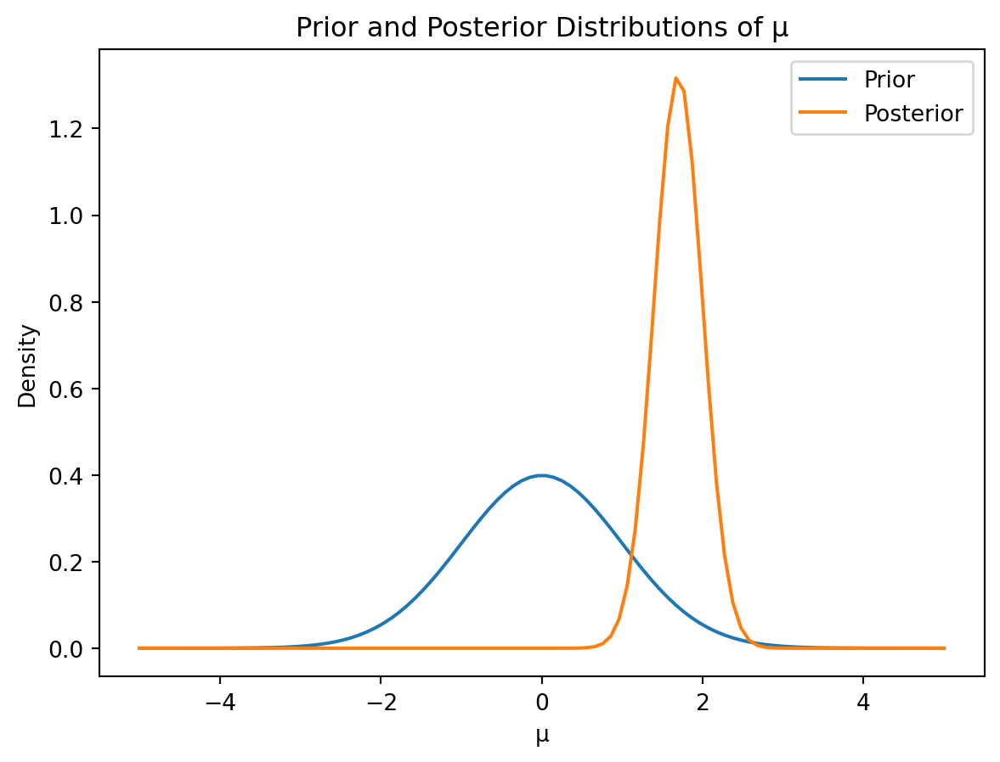
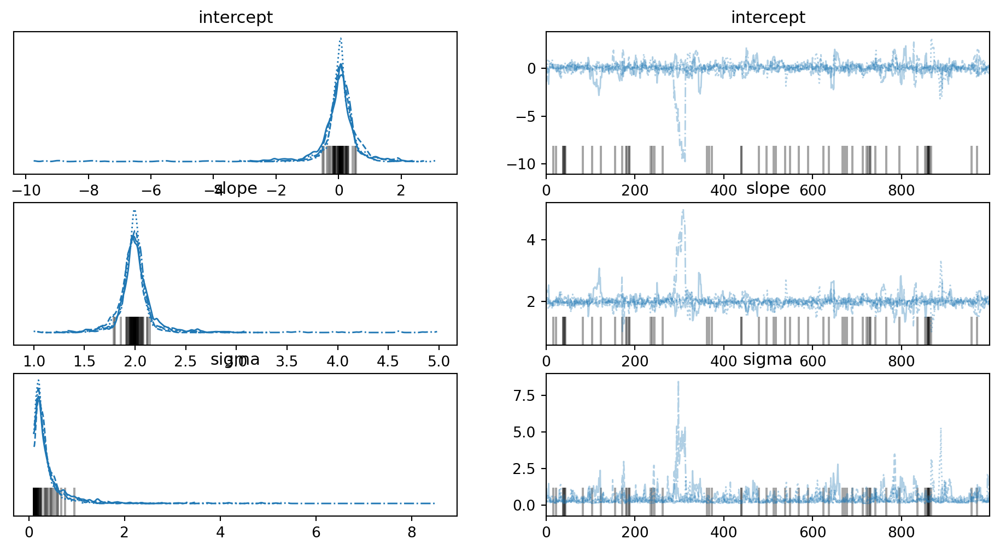
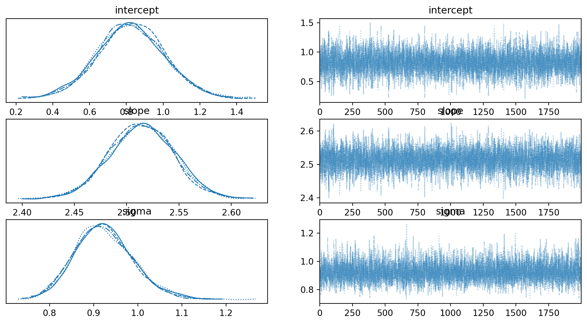

Parameter estimation is a fundamental problem in statistics, aiming to determine the values of unknown parameters in a statistical model based on observed data. This chapter explores parameter estimation through the lens of Bayes’ Theorem, contrasting it with frequentist approaches. We will learn how Bayes’ Theorem allows us to incorporate prior knowledge and update our beliefs about parameters as we gather more data.
11.0.1 Frequentist vs. Bayesian Approaches
Frequentist and Bayesian approaches to parameter estimation differ fundamentally in their interpretation of probability.
Frequentist Approach: Frequentists view probability as the long-run frequency of an event. Parameter estimation focuses on point estimates (e.g., maximum likelihood estimate) and confidence intervals, which are constructed based on the sampling distribution of the estimator. The true parameter is considered fixed, and the uncertainty is solely attributed to the variability of the data. For example, maximum likelihood estimation (MLE) seeks to find the parameter values that maximize the likelihood function, \(L(\theta|x) = P(x|\theta)\), where \(x\) is the observed data and \(\theta\) is the parameter.
Bayesian Approach: Bayesians view probability as a degree of belief. The unknown parameter \(\theta\) is treated as a random variable with a probability distribution. The Bayesian approach uses Bayes’ Theorem to update the prior distribution (our initial belief about \(\theta\)) based on the observed data to obtain the posterior distribution. This posterior distribution represents our updated belief about \(\theta\) after observing the data.
11.0.2 The Role of Bayes’ Theorem
Bayes’ Theorem provides the mathematical framework for updating our beliefs about parameters in light of new data. The theorem states:
\(P(\theta|x)\) is the posterior distribution of \(\theta\) given the data \(x\). This is what we want to estimate.
\(P(x|\theta)\) is the likelihood function, representing the probability of observing the data given a specific value of \(\theta\).
\(P(\theta)\) is the prior distribution of \(\theta\), representing our initial belief about the parameter before observing the data.
\(P(x)\) is the marginal likelihood (or evidence), which acts as a normalizing constant. It can often be calculated as: \(P(x) = \int P(x|\theta)P(\theta)d\theta\).
In practice, we often work with the proportional relationship:
\(P(\theta|x) \propto P(x|\theta)P(\theta)\)
This means that the posterior distribution is proportional to the product of the likelihood and the prior.
11.0.3 Prior and Posterior Distributions
The choice of prior distribution reflects our prior knowledge or beliefs about the parameter. A non-informative prior expresses a lack of strong prior knowledge, while an informative prior incorporates existing information. The posterior distribution is then obtained by combining the prior and the likelihood.
Let’s illustrate this with a simple example using Python. Suppose we are estimating the mean \(\mu\) of a normal distribution with known variance \(\sigma^2\). We’ll assume a normal prior for \(\mu\):
\(\mu \sim N(\mu_0, \sigma_0^2)\)
and observe data \(x_1, x_2, ..., x_n\) which are i.i.d. from \(N(\mu, \sigma^2)\). The likelihood is:
import numpy as npimport matplotlib.pyplot as pltfrom scipy.stats import norm# Prior parametersmu_0 =0sigma_0 =1# Likelihood parameterssigma =1data = np.random.normal(loc=2, scale=sigma, size=10) # Observed data, generating from a distribution with mean 2# Calculate posterior parametersn =len(data)mu_n = (mu_0 / sigma_0**2+ np.sum(data) / sigma**2) / (1/ sigma_0**2+ n / sigma**2)sigma_n = np.sqrt(1/ (1/ sigma_0**2+ n / sigma**2))# Plot prior and posteriorx = np.linspace(-5, 5, 100)plt.plot(x, norm.pdf(x, mu_0, sigma_0), label='Prior')plt.plot(x, norm.pdf(x, mu_n, sigma_n), label='Posterior')plt.xlabel('μ')plt.ylabel('Density')plt.legend()plt.title('Prior and Posterior Distributions of μ')plt.show()

This code generates a plot showing how the prior distribution is updated to the posterior distribution after observing the data. Note that the posterior is a compromise between the prior and the information from the data. As we observe more data, the influence of the prior diminishes, and the posterior becomes increasingly dominated by the data likelihood.
graph LR
A[Prior Distribution] --> B(Bayes' Theorem);
C[Likelihood Function] --> B;
B --> D[Posterior Distribution];
This diagram illustrates how Bayes’ Theorem combines the prior and likelihood to produce the posterior distribution.
11.1 Point Estimation
Point estimation aims to provide a single best guess for the unknown parameter(s) of a statistical model. In the Bayesian framework, this is often done by summarizing the posterior distribution. We’ll look at two common approaches: Maximum Likelihood Estimation (MLE) and Maximum A Posteriori (MAP) estimation.
11.1.1 Maximum Likelihood Estimation (MLE)
Maximum Likelihood Estimation (MLE) is a frequentist approach. It finds the parameter value that maximizes the likelihood function, which is the probability of observing the data given the parameter value. Formally, we want to find \(\hat{\theta}_{MLE}\) such that:
where \(L(\theta|x)\) is the likelihood function, \(x\) represents the observed data, and \(\theta\) is the parameter we are estimating. Often, it’s easier to work with the log-likelihood, \(\log L(\theta|x)\), since it simplifies calculations and doesn’t change the location of the maximum.
11.1.2 Maximum A Posteriori (MAP) Estimation
Maximum A Posteriori (MAP) estimation is a Bayesian approach. It finds the mode of the posterior distribution, i.e., the parameter value that maximizes the posterior probability. Formally, we want to find \(\hat{\theta}_{MAP}\) such that:
Since \(P(x)\) is independent of \(\theta\), we can ignore it in the maximization. Therefore, the MAP estimate is the parameter value that maximizes the product of the likelihood and the prior.
11.1.3 Comparing MLE and MAP
Feature
MLE
MAP
Approach
Frequentist
Bayesian
Goal
Maximize likelihood
Maximize posterior probability
Prior
Implicitly assumes uniform prior
Explicitly uses a prior distribution
Computation
Often simpler
Can be more complex, depending on prior
Interpretation
Point estimate, no uncertainty
Point estimate, reflects prior belief
As the number of data points increases, the influence of the prior diminishes, and the MAP estimate often converges to the MLE estimate. However, with limited data, the prior can significantly affect the MAP estimate.
11.1.4 Python Implementation of MLE and MAP
Let’s revisit the example of estimating the mean (\(\mu\)) of a normal distribution with known variance (\(\sigma^2\)). We’ll assume a normal prior for \(\mu\).
This code calculates both the MLE and MAP estimates for \(\mu\) and visualizes them against a histogram of the data. You can observe how MLE and MAP might differ when the prior has an effect, especially with a small sample size. As the sample size increases the MLE and MAP estimators should converge.
graph LR
A[Data] --> B(Likelihood Function);
C[Prior Distribution] --> D(Bayes Theorem);
B --> D;
D --> E[Posterior Distribution];
F[MAP: mode of Posterior] --> E;
G[MLE: maximum of Likelihood] --> B;
This diagram shows how both MLE and MAP approaches relate to the likelihood function and, in the case of MAP, the prior and posterior distributions.
11.2 Credible Intervals
While point estimates provide a single value for an unknown parameter, credible intervals offer a range of plausible values, reflecting the uncertainty in the estimate. Credible intervals are a key feature of Bayesian inference.
11.2.1 Definition and Interpretation
A \(100(1-\alpha)\%\) credible interval for a parameter \(\theta\) is an interval \([a, b]\) such that:
\(P(a \le \theta \le b | x) = 1 - \alpha\)
where \(x\) represents the observed data. This means that the probability that the true value of \(\theta\) lies within the interval \([a, b]\), given the observed data, is \(1-\alpha\). The interpretation is fundamentally probabilistic: there’s a \(1-\alpha\) probability that the true parameter value is within the credible interval. This is different from the frequentist confidence interval, which has a frequentist interpretation about the procedure rather than a statement about a single interval.
11.2.2 Calculating Credible Intervals
Calculating credible intervals depends on the form of the posterior distribution. If the posterior is easily integrable, we can find the interval directly. If not, we can use numerical methods such as Markov Chain Monte Carlo (MCMC) sampling techniques (covered in later chapters) to obtain samples from the posterior and estimate the credible interval from these samples.
For simple cases, if we have the cumulative distribution function (CDF) of the posterior distribution, \(F(\theta|x)\), we can find the credible interval \([a, b]\) by solving:
\(F(a|x) = \frac{\alpha}{2}\) and \(F(b|x) = 1 - \frac{\alpha}{2}\)
11.2.3 Equal-tailed vs. Highest Posterior Density (HPD) Intervals
There are different ways to construct credible intervals:
Equal-tailed intervals: These intervals are defined by the equations above. They are simple to calculate but might not be the shortest interval containing \(1-\alpha\) probability mass.
Highest Posterior Density (HPD) intervals: These intervals contain the values of \(\theta\) with the highest posterior density. They are always the shortest intervals containing \(1-\alpha\) probability mass. Finding HPD intervals often requires numerical optimization techniques.
11.2.4 Python Implementation of Credible Intervals
Let’s demonstrate calculating equal-tailed credible intervals using the previous example of estimating the mean of a normal distribution.
This code calculates and plots a 95% equal-tailed credible interval for the posterior distribution of \(\mu\).
11.2.5 Choosing the Credible Interval Level
The choice of the credible interval level (e.g., 95%, 99%) depends on the context and the desired level of certainty. A higher credible interval level implies a wider interval, reflecting greater uncertainty. A 95% credible interval is commonly used, but other levels might be appropriate depending on the application’s risk tolerance. There isn’t a universally optimal level.
graph LR
A[Posterior Distribution] --> B(CDF);
B --> C{Find quantiles};
C --> D[Credible Interval];
This diagram shows how to obtain a credible interval from the posterior distribution via the CDF.
11.3 Advanced Topics in Parameter Estimation
This section briefly introduces some more advanced topics in Bayesian parameter estimation, providing a foundation for further exploration.
11.3.1 Bayesian Model Comparison
Often, we have multiple competing models to explain the same data. Bayesian model comparison provides a formal framework for selecting the best model. The key concept is the Bayes factor, which is the ratio of the marginal likelihoods of two models:
\(B_{12} = \frac{P(x|M_1)}{P(x|M_2)}\)
where \(P(x|M_i)\) is the marginal likelihood of model \(M_i\). A Bayes factor greater than 1 favors model \(M_1\), while a Bayes factor less than 1 favors model \(M_2\). The marginal likelihood is often difficult to calculate analytically, requiring numerical methods like MCMC. Another approach is to use model evidence. The model with the higher model evidence is favored. Model evidence is calculated by integrating the likelihood over the prior:
\(P(x|M) = \int P(x|\theta, M) P(\theta|M) d\theta\)
Where \(M\) denotes the model.
11.3.2 Hierarchical Models
Hierarchical models are useful when dealing with data from multiple related sources or groups. They introduce parameters at different levels, allowing for sharing of information across groups. For example, we might model the performance of students in different schools, allowing for school-specific effects while also borrowing strength across schools to estimate overall effects. This can be represented by multi-level models. A simple hierarchical model might look like:
Here, \(\theta_i\) are group-level parameters, \(\mu\) and \(\tau^2\) represent the hyperparameters for the group-level distribution, and \(\sigma^2\) is the variance of individual observations.
11.3.3 Dealing with High-Dimensional Data
High-dimensional data (many parameters relative to the number of data points) pose challenges for Bayesian estimation. Techniques like regularization (e.g., adding priors that shrink parameters towards zero) or dimensionality reduction are essential to avoid overfitting and ensure stable posterior estimates. Prior selection plays a critical role in high-dimensional settings. Sparsity-inducing priors, like Laplace or horseshoe priors, are particularly useful in shrinking many parameters to exactly zero, effectively performing variable selection.
11.3.4 Computational Methods (MCMC)
For complex models, analytical solutions are often intractable. Markov Chain Monte Carlo (MCMC) methods provide a powerful approach to approximate the posterior distribution by generating a sample from it. MCMC algorithms, such as Metropolis-Hastings and Gibbs sampling, construct a Markov chain whose stationary distribution is the target posterior. By running the chain for a sufficient number of iterations, we can obtain a sample that accurately represents the posterior. Libraries like PyMC provide tools for implementing MCMC in Python.
import pymc as pmimport numpy as np# Example: Simple linear regression with PyMC# DataX = np.array([1, 2, 3, 4, 5])y = np.array([2.1, 3.9, 6.2, 7.8, 10.1])with pm.Model() as model:# Priors intercept = pm.Normal("intercept", mu=0, sigma=10) slope = pm.Normal("slope", mu=0, sigma=10) sigma = pm.HalfNormal("sigma", sigma=5)# Likelihood mu = intercept + slope * X y_obs = pm.Normal("y_obs", mu=mu, sigma=sigma, observed=y)# Posterior sampling using MCMC trace = pm.sample(1000, tune=1000) #tune helps the algorithm to converge fasterpm.plot_trace(trace)plt.show()pm.summary(trace)
Initializing NUTS using jitter+adapt_diag...
Multiprocess sampling (4 chains in 4 jobs)
NUTS: [intercept, slope, sigma]
/home/leopard/development/QuantumTraderX/venv/lib/python3.12/site-packages/rich/live.py:231: UserWarning: install
"ipywidgets" for Jupyter support
warnings.warn('install "ipywidgets" for Jupyter support')
Sampling 4 chains for 1_000 tune and 1_000 draw iterations (4_000 + 4_000 draws total) took 2 seconds.
There were 58 divergences after tuning. Increase `target_accept` or reparameterize.
The rhat statistic is larger than 1.01 for some parameters. This indicates problems during sampling. See https://arxiv.org/abs/1903.08008 for details

mean
sd
hdi_3%
hdi_97%
mcse_mean
mcse_sd
ess_bulk
ess_tail
r_hat
intercept
0.023
0.748
-0.989
1.024
0.048
0.036
614.0
417.0
1.01
slope
2.000
0.221
1.648
2.269
0.014
0.010
612.0
415.0
1.01
sigma
0.403
0.448
0.097
0.977
0.026
0.019
425.0
501.0
1.01
This code performs a simple linear regression using PyMC, demonstrating MCMC sampling to obtain posterior estimates of the model parameters. Note that tune is added to allow the sampler to find a good starting point for the MCMC chain. The trace plot visualizes the MCMC samples and helps assess convergence. The summary provides statistics like the mean, standard deviation, and credible intervals for each parameter. The use of priors such as HalfNormal helps to guide and constrain the MCMC algorithm.
graph LR
A[Prior] --> B(Likelihood);
B --> C[Posterior];
C --> D[MCMC Sampling];
D --> E[Posterior Sample];
This diagram illustrates the role of MCMC in approximating the posterior distribution. The algorithm iteratively samples from the posterior distribution until the samples accurately represent the target distribution.
11.4 Case Studies
This section presents practical examples of Bayesian parameter estimation using Python.
11.4.1 Example: Estimating the Mean of a Normal Distribution
Let’s revisit the problem of estimating the mean (\(\mu\)) of a normal distribution with known variance (\(\sigma^2\)) from a sample of data \(x_1, x_2, \dots, x_n\). We assume a normal prior for \(\mu\):
Posterior Mean: 1.83
Posterior Standard Deviation: 0.30
This code generates a plot showing the prior, posterior, and data histogram.
11.4.2 Example: Estimating the Parameter of a Binomial Distribution
Let’s estimate the success probability (\(\theta\)) of a binomial distribution. We observe \(k\) successes in \(n\) trials. We assume a Beta prior for \(\theta\):
This code shows how the prior Beta distribution is updated to the posterior Beta distribution after observing the binomial data.
11.4.3 Example: Bayesian Linear Regression
Bayesian linear regression models the relationship between a dependent variable \(y\) and independent variables \(X\) as:
\(y_i = X_i \beta + \epsilon_i\)
where \(\epsilon_i \sim N(0, \sigma^2)\). We can assign priors to \(\beta\) and \(\sigma^2\) (e.g., normal and inverse gamma, respectively). Inference is performed using MCMC sampling.
import numpy as npimport pymc as pmimport matplotlib.pyplot as plt#Simulate some datanp.random.seed(42)X = np.linspace(0,10,100)true_slope =2.5true_intercept =1y_true = true_slope * X + true_intercepty = y_true + np.random.normal(0,1,100)with pm.Model() as model:#Priors intercept = pm.Normal("intercept", mu=0, sigma=10) slope = pm.Normal("slope", mu=0, sigma=10) sigma = pm.HalfNormal("sigma", sigma=10)#Likelihood mu = intercept + slope * X y_obs = pm.Normal("y_obs", mu=mu, sigma=sigma, observed=y)#MCMC trace = pm.sample(2000, tune=1000)pm.plot_trace(trace)plt.show()pm.summary(trace)
Initializing NUTS using jitter+adapt_diag...
Multiprocess sampling (4 chains in 4 jobs)
NUTS: [intercept, slope, sigma]
/home/leopard/development/QuantumTraderX/venv/lib/python3.12/site-packages/rich/live.py:231: UserWarning: install
"ipywidgets" for Jupyter support
warnings.warn('install "ipywidgets" for Jupyter support')
Sampling 4 chains for 1_000 tune and 2_000 draw iterations (4_000 + 8_000 draws total) took 2 seconds.

mean
sd
hdi_3%
hdi_97%
mcse_mean
mcse_sd
ess_bulk
ess_tail
r_hat
intercept
0.826
0.182
0.473
1.167
0.003
0.002
4012.0
4046.0
1.0
slope
2.514
0.031
2.455
2.573
0.000
0.000
3970.0
3961.0
1.0
sigma
0.924
0.067
0.793
1.043
0.001
0.001
4605.0
4258.0
1.0
This uses PyMC to perform Bayesian linear regression, illustrating the use of MCMC for posterior inference. The trace plot visualizes the samples. The summary shows the posterior means, standard deviations, and credible intervals for the intercept and slope.